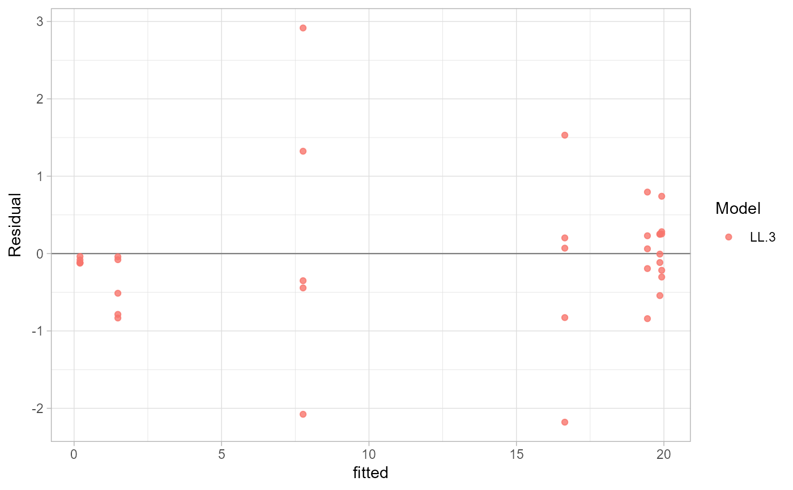

`residual_data()` returns observed, fitted, and residual values from stored models. `plot_residuals()` returns a `ggplot2` diagnostic plot.
Usage
residual_data(x, models = "all")
plot_residuals(x, models = "all", type = c("fitted", "dose"))Examples
data(multi_isolate)
fit <- estimate_EC50(
growth ~ dose,
data = subset(multi_isolate, isolate == 1 & fungicida == "Fungicide A"),
isolate_col = "isolate",
fct = drc::LL.3()
)
residual_data(fit)
#> ID model dose observed fitted residual
#> 1 1 LL.3 0e+00 20.20823987 19.9257473 0.282492586
#> 2 1 LL.3 1e-05 20.11682791 19.8633829 0.253445024
#> 3 1 LL.3 1e-04 19.24796780 19.4416436 -0.193675790
#> 4 1 LL.3 1e-03 15.81234550 16.6397063 -0.827360808
#> 5 1 LL.3 1e-02 7.32067572 7.7646682 -0.443992436
#> 6 1 LL.3 1e-01 0.69852635 1.4846233 -0.786096958
#> 7 1 LL.3 1e+00 0.11811845 0.2002329 -0.082114404
#> 8 1 LL.3 0e+00 20.17927519 19.9257473 0.253527907
#> 9 1 LL.3 1e-05 19.74786350 19.8633829 -0.115519383
#> 10 1 LL.3 1e-04 19.50312642 19.4416436 0.061482830
#> 11 1 LL.3 1e-03 16.70972446 16.6397063 0.070018150
#> 12 1 LL.3 1e-02 10.68067905 7.7646682 2.916010892
#> 13 1 LL.3 1e-01 0.65167985 1.4846233 -0.832943465
#> 14 1 LL.3 1e+00 0.07631550 0.2002329 -0.123917353
#> 15 1 LL.3 0e+00 20.66666536 19.9257473 0.740918078
#> 16 1 LL.3 1e-05 19.32030445 19.8633829 -0.543078438
#> 17 1 LL.3 1e-04 20.23671428 19.4416436 0.795070696
#> 18 1 LL.3 1e-03 14.46034463 16.6397063 -2.179361683
#> 19 1 LL.3 1e-02 7.41380671 7.7646682 -0.350861442
#> 20 1 LL.3 1e-01 0.97172472 1.4846233 -0.512898592
#> 21 1 LL.3 1e+00 0.08066504 0.2002329 -0.119567808
#> 22 1 LL.3 0e+00 19.62249800 19.9257473 -0.303249285
#> 23 1 LL.3 1e-05 20.11220854 19.8633829 0.248825651
#> 24 1 LL.3 1e-04 18.60052509 19.4416436 -0.841118497
#> 25 1 LL.3 1e-03 16.84213793 16.6397063 0.202431618
#> 26 1 LL.3 1e-02 5.68736877 7.7646682 -2.077299378
#> 27 1 LL.3 1e-01 1.40551304 1.4846233 -0.079110268
#> 28 1 LL.3 1e+00 0.16302001 0.2002329 -0.037212840
#> 29 1 LL.3 0e+00 19.70929331 19.9257473 -0.216453980
#> 30 1 LL.3 1e-05 19.85658256 19.8633829 -0.006800328
#> 31 1 LL.3 1e-04 19.67191918 19.4416436 0.230275589
#> 32 1 LL.3 1e-03 18.17009348 16.6397063 1.530387172
#> 33 1 LL.3 1e-02 9.08760034 7.7646682 1.322932191
#> 34 1 LL.3 1e-01 1.44357318 1.4846233 -0.041050130
#> 35 1 LL.3 1e+00 0.08274680 0.2002329 -0.117486046
plot_residuals(fit)
